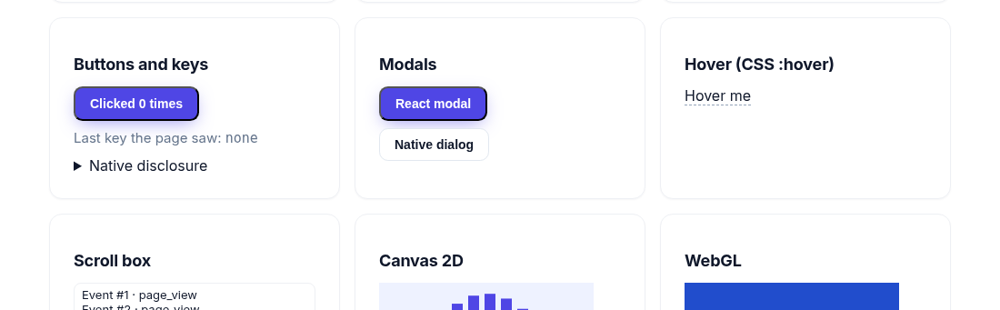
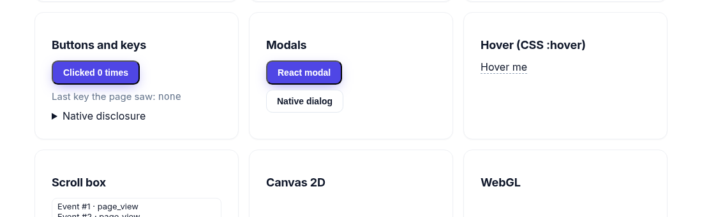
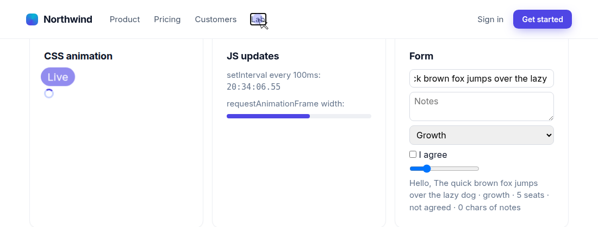
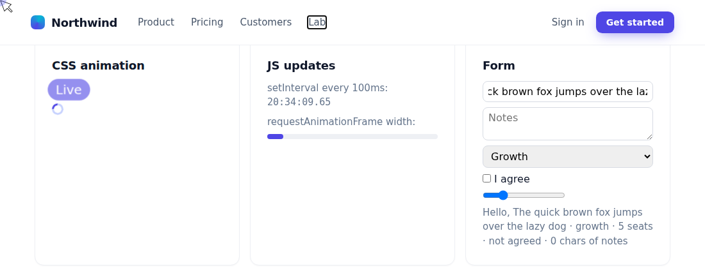

The live copy of a frame runs in one person's tab. Everyone else sees an rrweb mirror of its DOM, and when someone else drives, their clicks, typing and scrolling are forwarded to the live copy (the #981 model: the copy stays where it started).
Yes for ordinary UI. On the Northwind demo site the mirror kept up with every DOM change, and forwarded clicks, typing, selects, keys, modals and scrolling all landed on the host. A click showed up on the driver's mirror in about 0.1s plus two network trips. A static page costs nothing once loaded. It falls short on canvas and WebGL, cross-origin embeds, and assets on the owner's localhost, and the live copy only runs while the host's tab does.
Both panes run in this page. The left one is the real frame; the right one is Avery's mirror, rebuilt from recorded DOM events that pass through a fake network. Switch the driver to Avery and use the mirror.
Scripted in Chromium against the Northwind demo site plus a lab page, with a host tab and two watchers (measure.mjs on the prototype branch).
Clicks, links, SPA navigation. Buttons, the Monthly/Annual toggle, <details>, links that change the route.
Forms. Text fields, select, checkbox, range. The host is the source of truth; the driver's typing echoes locally.
Modals. React portals, and native <dialog> in the top layer.
Scrolling of the page and of inner scroll boxes, mirrored to every watcher.
Only the driver's input lands. Input a non-driver sent anyway was dropped by the host.
CSS animations and hover. Animations play on each mirror by themselves. Watchers see :hover from the host's pointer; the host's own frame doesn't get :hover from forwarded input, only JS mouse events.
Seven rrweb live-mode gaps on the mirror side: late joiners saw a blank page, input listeners dropped on each rebuild, echoes ate keystrokes, closed dialogs froze the mirror, CSS animations stayed paused, no wheel scrolling, Escape closed only the mirror's dialog.
Canvas and WebGL are blank unless the mirror may run scripts. On a blank-origin iframe that means the canvas app's origin, so the mirror needs its own sandbox origin.
Dragging a range thumb hung the mirror tab in headless Chromium while scripts were off (a bare sandboxed iframe does the same). With scripts on it worked.
Cross-origin iframes (maps, video players, payment widgets) mirror as empty boxes. The recorder can't see inside them.
Assets on the owner's localhost. Fonts, images and video are fetched by each viewer from the snapshot's URLs, so a viewer of a Mac-hosted room gets fallback fonts, reflowed text and broken media.
Browser-only acts need a real user gesture and can't be forwarded: clipboard, file pickers, popups, fullscreen, audio. Code that checks isTrusted ignores forwarded input.
Bytes the host sends per viewer, measured at the relay. Gzip stands in for WebSocket compression.
| Page | Joining snapshot | Steady, raw | Steady, gzip | What moves |
|---|---|---|---|---|
| Home, idle | 18 KB (4.3 KB gz) | 0 B/s | 0 B/s | Nothing changes, nothing is sent |
| Pricing, driver scrolls and moves | 18 KB (4.4 KB gz) | 0.5 KB/s | 0.1 KB/s | Pointer and scroll positions |
| Lab, canvas off | 30 KB (6.2 KB gz) | 11.7 KB/s | 0.4 KB/s | A 10 Hz clock and a bar resized every frame |
| Lab, canvas at 4 fps | 32 KB (9.6 KB gz) | 24 KB/s | 4.1 KB/s | Plus two canvases as WebP stills |
| Lab, canvas at 15 fps | 32 KB (13 KB gz) | 53 KB/s | 12 KB/s | Canvas stills dominate |
| Network delay each way | Click on the mirror until the mirror shows it (median of 6) |
|---|---|
| 0 ms | 114 ms |
| 40 ms | 164 ms |
| 100 ms | 298 ms |
The 0 ms figure includes the test driver's own click overhead; the host acknowledged forwarded input in 6 to 30 ms. A late joiner gets the last snapshot plus every event since, which grows without bound on an animated page, so the host has to re-snapshot periodically or on join.




localhost gets a fallback font and different wrapping.